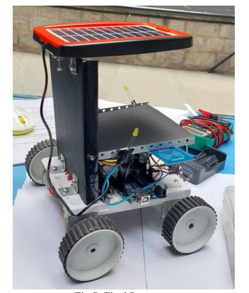
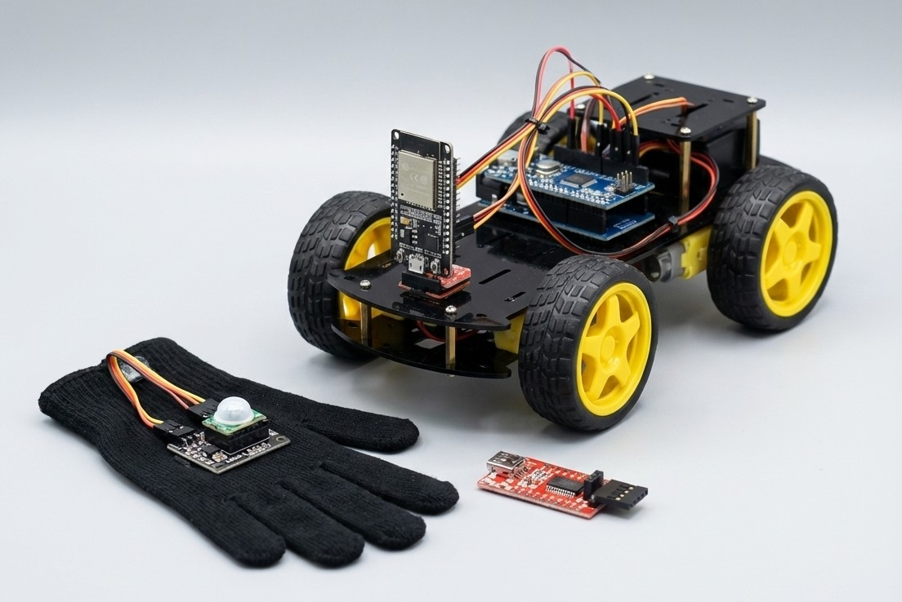

Chandu Baya Reddy
|
|
I am an M.Sc. ICT student at FAU Erlangen (4th semester) with expertise in communication systems, embedded development, and machine learning. I have industry-proven skills from Bosch in designing embedded control units and optimizing test systems.
Strong in Python, C/C++, MATLAB, and IoT hardware/software integration. I am passionate about creating efficient, scalable solutions.
Specializing in Embedded Systems and Machine Learning. Relevant coursework: Deep Learning, Communication Networks, Embedded Systems.
Developed full automation for sensor validation systems. Designed hardware circuits and Python/MATLAB scripts for data analysis, significantly reducing testing time.
Foundation in electronics, circuit design, and programming. Completed multiple capstone projects in IoT and Robotics.

Designed a compact, power-efficient localization tag with 8+ months battery life. Integrated LoRa transceiver and 9-axis IMU on a custom multi-layer PCB.

Automated validation system for automotive sensors at Robert Bosch. Reduced manual test time by 40% using custom hardware and analysis scripts.

Implemented STFT-based analysis, noise profiling, and objective metrics (SNR, SDR). Automated figure generation for research at AudioLabs.

Developed an autonomous navigation wheelchair powered by solar energy. Published scientific paper in IJERT.

Implemented motion-based control via Gyroscope/Accelerometer sensors holding a live-streaming camera for remote control.
chandu.baya.reddy@gmail.com
+49 15566098124
Grazerstr. 1, Erlangen, 91052
I am constantly expanding my skillset to build scalable, production-ready AI systems. Currently exploring cloud-native technologies and MLOps pipelines.
Cloud Computing Services
Containerization
Orchestration
Model Deployment & Scaling